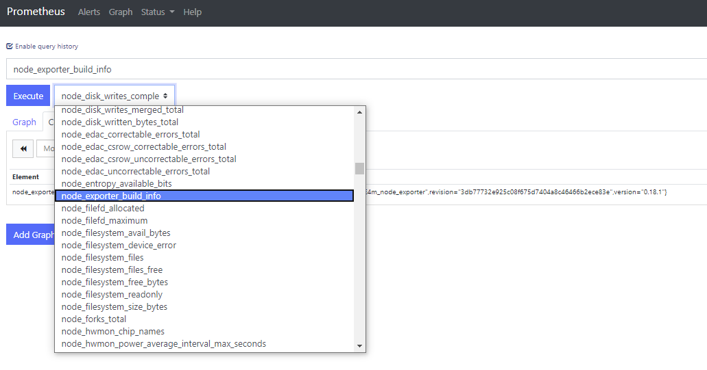
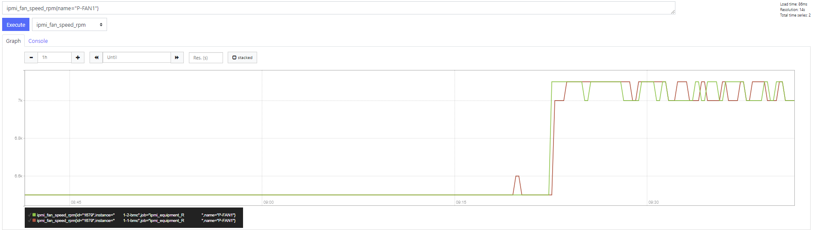
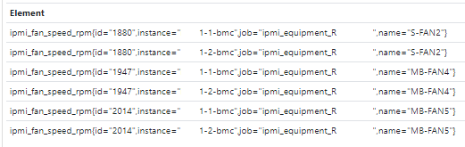
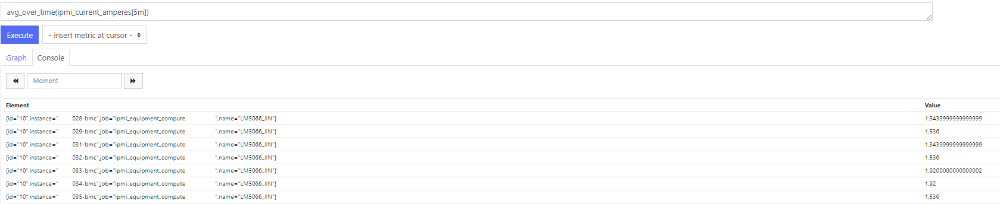

11. [Community] - Monitoring¶
Default monitoring of the stack is based on Prometheus.
11.1. Monitoring Introduction¶
This monitoring documentation has multiple aims:
Provide an overview of Prometheus and the different exporters.
Provide instructions on how to add exporters to nodes, and how you could add your own exporters.
Provide instructions on alerting configuration.
Provide an overview of Grafana and the different dashboard.
This documentation is built around those section:
Introduction
Prometheus and alerting
Grafana
Exporters
11.2. Prometheus¶
In this topic, we will see how to configure and deploy the prometheus Ansible roles from BlueBanquise Community repository.
11.2.1. Prerequisites¶
Have ansible installed
Know how to use playbooks
Also, make sure those packages are available on the repositories of your system (they should be in the bluebanquise repository):
prometheus
alertmanager
karma
ipmi_exporter
snmp_exporter
grafana
11.2.2. Installation¶
11.2.2.1. Prometheus Server¶
First create file /etc/bluebanquise/inventory/group_vars/all/prometheus.yml with the following content:
prometheus:
scrape_interval: 1m
evaluation_interval: 2m
alertmanager:
group_wait: 1m
group_interval: 10m
repeat_interval: 3h
Now, simply add to the playbook of your choice (which is for the Prometheus server) the prometheus_server role (change the values of enable_services and start_services accordingly):
vars:
- enable_services: true
- start_services: true
roles:
- role: prometheus_server
tags: prometheus_server
Then run:
ansible-playbook /etc/ansible/playbooks/<your server playbook> --tags prometheus_server
Now prometheus_server should be installed and configured with a minimal configuration.
The configuration file for Prometheus is located under /etc/prometheus/prometheus.yml. It contains all the exporters to scrape, and more.
It is now time to configure client side. Note that while the /etc/bluebanquise/inventory/group_vars/all/addons/prometheus.yml file is only used by the prometheus_server role, the client files seen in next section will be shared by both server and client role. Server will use it to know which exporters to scrap on who, and clients will use it to know which exporters to install locally.
11.2.2.2. Prometheus Client¶
For each equipment_profile, create a file called monitoring.yml that contains the desired exporters to be deployed, into equipment_profile folder of your target hosts groups.
For example, to set exporters to be scrapped and installed on all hosts of equipment_profile equipment_XX, create the file /etc/ansible/inventory/group_vars/equipment_XX/monitoring.yml, with the following content:
monitoring:
exporters:
node_exporter:
package: node_exporter
service: node_exporter
port: 9100
ha_cluster_exporter:
package: ha_cluster_exporter
service: ha_cluster_exporter
scrape_interval: 10m
scrape_timeout: 4m
port: 9664
This will setup here two exporters on these equipments: node_exporter and ha_cluster_exporter.
Also don’t forget to add the name of the package you want to install and the service name.
Note
As you can see, you can also add the scrape_interval (which is how often the metrics get scraped), and the scrape_timeout (which represents how long until a scrape request times out).
Note
If you want to add exporters, make sure your package contains the binary and the .service file, put preferably under /usr/local/bin and /etc/systemd/system.
Now simply add to the playbook of your choice (which is for the Prometheus clients) the prometheus_client role (change the values of enable_services and start_services accordingly):
vars:
- enable_services: true
- start_services: true
roles:
- role: prometheus_client
tags: prometheus_client
Then run:
ansible-playbook /etc/ansible/playbooks/<your client playbook> --tags prometheus_client
Now prometheus_client should be installed.
Also, re-execute the prometheus_server role on the management node hosting the Prometheus server, to ensure Prometheus is now aware of these new exporters to scrape.
ansible-playbook /etc/ansible/playbooks/<your server playbook> --tags prometheus_server
11.2.3. Prometheus.yml¶
File /etc/prometheus/prometheus.yml is where all the exporters and the scrape related variables are stored for the Prometheus server to run. It looks something like this:
global:
scrape_interval: 1m
evaluation_interval: 2m
rule_files:
- 'alerts/*.yml'
alerting:
alertmanagers:
- static_configs:
- targets:
- localhost:9093
scrape_configs:
# I watch myself
- job_name: 'prometheus_master'
scrape_interval: 30s
static_configs:
- targets: ['localhost:9090']
# GENERIC EXPORTER
# All equipment profiles and their exporters
- job_name: 'equipment_R_node_exporter'
scrape_interval:
scrape_timeout:
static_configs:
- targets: ['management1-1:9100']
- targets: ['management1-2:9100']
Few notes:
rule_files is where the alert related configurations are located
alerting is where Prometheus should send alerts (i.e. Alertmanager)
scrape_configs is where are defined all the exporters that server need to listen to, with the targets, and so on
It is now time to learn variables before using them in the Prometheus interface.
11.2.4. Variables¶
There are 4 types of variable in Prometheus:
Counters
Gauges
Histograms
Summaries
11.2.4.1. Counters¶
Counters are used for metrics that can only increase. It is an incremental counter, that is used in order to know how rapidly something grows for example.
Note
For example, it is used for the number of packets that is transmitted by a switch interface. Using the irate function of Prometheus, we can then tell how many packets were transmitted in a given interval.
It can also be used for error counts, tasks completed, and so on.
11.2.4.2. Gauges¶
Gauges are used for metrics that can go up, but can also decrease. It gives a specific value for the time set.
Note
For example, it is used for the temperature of the BMCs. This way, you have the temperature for any given time. It can also be used for memory usage, number of requests, and so on.
It can be used with function like min, max, average, and so on to get the desired result.
11.2.4.3. Histograms & Summaries¶
Histograms and summaries are more complex variable types, and are used less often, which is the reason why we won’t go too much in the details. Histograms and summaries are both used for getting the request durations, or the response sizes. Their main goal is to watch for data that fall in a certain category.
11.2.5. Queries¶
In order to query a metric with Prometheus, you have to go to the Prometheus web page. By default, it is located at http://localhost:9090 .
To query a metric, simply type in the metric name. You also have a dropdown list with all the available metrics to query.
{kind=link}
If you want specific metrics (with one or more specific labels):
query_name{instance="instance"}
For example, ipmi_fan_speed_rpm{name=”P-FAN1”} will only return the fan_speed of the fan name “P-FAN-1”:

In the graph tab, you can also see the variation of the value over time. You can also choose from when to when.
{kind=link}
11.2.5.1. Regex¶
You can also use the same queries, but with regex.
If you want the attribute to follow the given regex, the global syntax for is:
query{attribute=~"regex_value"}
Or if you don’t want the attribute to follow the regex:
query{attribute!~"regex_value"}
Note
The tilda here is very important.
Using this syntax, you can:
get the metrics which attribute corresponds to a list
For example:
ipmi_fan_speed_rpm{name=~"MB-FAN5|MB-FAN4|S-FAN2"}
will return:
{kind=link}
follow a pattern
For example:
ipmi_fan_speed_rpm{name=~".*.FAN.*"}
will return all the ipmi_fan_speed_rpm metrics with the string “FAN” in its name label.
Another example:
ipmi_fan_speed_rpm{__name__=~"ipmi.*",instance=~"001-bmc"}
will return all the metrics which name starts with ipmi, and which instance is 001-bmc.

11.2.5.2. Boolean operators¶
You can also combine different metrics, using boolean operators. There are several operators in Prometheus. Some of them are the following:
== (equal)
!= (not-equal)
> (greater-than)
< (less-than)
>= (greater-or-equal)
<= (less-or-equal)
These are used in order to get the results that correspond to the condition. For example:
ipmi_up==1
will only return the instances of the query that are equal to one.
It is also possible to use logic operators:
and (intersection)
or (union)
unless (complement)
Vector1 and vector2 results in a vector consisting of the elements of vector1 for which there are elements in vector2 with exactly matching label sets. Other elements are dropped. The metric name and values are carried over from the left-hand side vector.
For example:
node_exporter_build_info and ignoring(revision, version,goversion,branch,package) node_cpu_package_throttles_total
will return:
node_exporter_build_info{branch="HEAD",goversion="go1.12.5",instance="1-2:9100",job="equipment_R_node_exporter",revision="3db77732e925c08f675d7404a8c46466b2ece83e",version="0.18.1"}
because it has the same instance name and job name as a node_cpu_package_throttles_total.
Vector1 or vector2 results in a vector that contains all original elements (label sets + values) of vector1 and additionally all elements of vector2 which do not have matching label sets in vector1.
For example:
node_exporter_build_info or node_cpu_package_throttles_total
will return:
node_exporter_build_info{branch="HEAD",goversion="go1.12.5",instance="1-2:9100",job="equipment_R_node_exporter",revision="3db77732e925c08f675d7404a8c46466b2ece83e",version="0.18.1"}
node_cpu_package_throttles_total{instance="1-2:9100",job="equipment_R_node_exporter",package="0"}
node_cpu_package_throttles_total{instance="1-2:9100",job="equipment_R_node_exporter",package="1"}
Vector1 unless vector2 results in a vector consisting of the elements of vector1 for which there are no elements in vector2 with exactly matching label sets. All matching elements in both vectors are dropped.
There are also other types of boolean operators, like group_left or group_right, in the online documentation.
11.2.5.3. Functions & aggregations¶
Prometheus comes with a variety of querying functions. We will go through some of the major ones:
delta
irate
avg
sum
min, max
11.2.5.3.1. delta¶
delta() calculates the difference of value between the value from X minutes ago and the current value.
Example:
delta(ipmi_current_amperes[5m])
{kind=link}
11.2.5.3.2. rate & irate¶
rate() gives you the per second average rate of change over your range interval. irate() is the per second rate of change at the end of your range interval
The difference between rate and delta, is that rate automatically adjusts for resets. It means that it only works with “counter” variables, i.e. a variable that can only increase. For example, if a metric value changes like this:
0
4
6
10
and resets:
2
Rate will capture the change, and will take the value of 2 as if it were 12 to get the rate.
11.2.5.3.3. avg¶
avg() returns the average value of all query results.
By default, it returns the avg value by job:
avg(ipmi_current_amperes)
{kind=link}
But you can also average by any other attribute, using avg(query) by(attribute):

11.2.5.3.4. avg_over_time¶
avg_over_time() is self explanatory, it gives you the average value of a metric during the given interval, for each instance.
For example if ipmi_current_amperes had the values: 2, 4, 6 in the last 5m:
avgi_over_time(ipmi_current_amperes[5m])
would return 4.
output example:
{kind=link}
11.2.5.3.5. sum, min, max¶
Self explanatory. Works the same way as avg, and can be used with _over_time too.
11.2.6. Alerts¶
Alerts are located in the /etc/prometheus/alerts/ directory.
An example of alert:
groups:
- name: Alerts for nodes
rules:
- alert: high_RAM_ Usage
expr: (1 - (node_memory_MemAvailable_bytes{job=~".*.R.*"} / (node_memory_MemTotal_bytes{job=~".*.R.*"})))* 100 > 90
for: 1m
labels:
severity: warning
annotations:
summary: " (instance {{ $labels.instance }})"
description: "memory usage greater than 90% \n VALUE = {{ $value }}\n LABELS: {{ $labels }}"
This alert will be seen as pending by Prometheus when the condition in expr: is verified, in this case, when the percentage of used RAM is greater than 90%. It will seen as firing when the condition is met for X minutes, hours, or days, X being in the for field. It will be fired with an extra label called severity, which is set to warning in this case. The annotations section is here to set a summary and description of the alert. You can access the variables of the metric by using de global variables {{ $value }} or {{ $labels }}.
Tip: if you need a same alert to fire a warning after a t_1 desired time, and then fire a critical after a longer t_2 time, duplicate the alert, with the exact same name and arguments, changing only for and severity. The Alertmanager configuration is made to handle these case: when same name, a critical alert will overlap a warning alert.
11.2.6.1. Alertmanager¶
Alertmanager is an additional tool for Prometheus, used to manage alerts.
Alertmanager DO NOT evaluate alerts, this is Prometheus task. Alertmanager is a tool to manage alerts already fired by Prometheus.
By default, it’s located under the management node’s ip address, port 9093. Configuration file of Alertmanager is under /etc/alertmanager/alertmanager.yml.
By default it looks like this:
global:
smtp_smarthost: 'localhost:25'
smtp_from: 'alertmanager@your_domain'
smtp_require_tls: false
route:
group_by: ['alertname', 'job']
group_wait: 1m
group_interval: 10m
repeat_interval: 3h
receiver: sys-admin-team
receivers:
- name: 'sys-admin-team'
email_configs:
- to: 'sys-admin-team@site.com'
inhibit_rules:
- source_match:
severity: 'critical'
target_match:
severity: 'warning'
equal: ['alertname', 'cluster', 'service']
You can find more about it here:
And here are examples of some alerts:
11.3. Grafana¶
In this topic, we will see how to install Grafana, using the provided rpms.
11.3.1. Installation¶
11.3.1.1. Manual installation¶
There should be a package for grafana under the bluebanquise repository.
By running the following command:
dnf install grafana # (RHEL8)
yum install grafana # (RHEL7)
It should install grafana-server.
11.3.2. Useful Files¶
The service is located under /usr/lib/systemd/system/grafana-server.service
The binary under /usr/sbin/grafana-server
Grafana datas (dashboards, and so on) are stored under /var/lib/grafana/grafana.db
Grafana default settings under /usr/share/grafana/conf/default.ini
Now, log into Grafana at http://localhost:3000, using default credentials admin / admin.
11.3.3. Dashboard¶
A dashboard is made of Query and Alerts.
11.3.3.1. Query¶
11.3.3.1.1. metrics field¶
This section is where you put Prometheus metric queries. See the Prometheus section of the documentation for more information about the metrics (functions, different types of variables, show only certain instances) as both tools share the same syntax.

By default, it shows you the requested metric in a graph panel.

11.3.3.1.2. legend field¶
You can choose here what the legend will look like.
syntaxe: {{ metric label }}text_you_want
By default, it will show the whole metric. Example:

By example:
{{instance}}:toto:{{device}}
Will provides:

11.3.3.1.3. min step and resolution¶
Note
It is recommended not to change the min step and Resolution.
11.3.3.1.4. format¶
Time series or table or heatmap. It is recommended to choose timeseries if you desire to make a graph.
11.3.3.1.5. instant¶
If you only want to have the latest scraped metric. Useful when using tables.
11.3.3.2. Transform¶
Note
The transform tab is new with Grafana 7, and is still in development.

Mainly useful when using graphs. Allows you to show the things you want in the table, by reducing, filtering, joining metrics, and organizing fields.
For example :

Here, we have 3 queries, but if you make no transform, it will look like this:

So we need to make the following transformations to get the desired table:
Filter by name, to only take the values that we want.
Outer Join, to join the query values into one table (query A,query B,query C) here we join on ifName because it’s the common value between the queries that we want to use.
Organize field, to put everything where we want, and to rename de fields Value B and Value C (values of the queries) to show what they represent.
With this transformation:

You get the following result:

You can find more about the different transformations here: https://grafana.com/docs/grafana/latest/panels/transformations/
11.3.3.3. Alert¶
You can create alerts in Grafana, by setting up conditions. It is pretty much self-explanatory, but if you want more info, you can check this link: https://grafana.com/docs/grafana/latest/alerting/create-alerts/
Note that alerts defined in Grafana are not related to alerts defined in Prometheus.
Note also that using plugins, it is possible to import into Grafana alerts registered into Alertmanager.
11.3.4. Types of Visualization¶
By default, there are 11 different types of visualization, but you can install more using the plugin list. You can find them here: https://grafana.com/grafana/plugins?direction=asc&orderBy=weight&type=panel
In this documentation, we will go through 2 of the most used ones, as they have approximately all the options that other types of visualization have.
11.3.4.1. Graph¶
11.3.4.1.1. Panel¶
11.3.4.1.1.1. Display¶
Here, you can choose the design of your graph. You can fidget with the options to get your desired graph. If you want more info, check https://grafana.com/docs/grafana/latest/panels/visualizations/graph-panel/
11.3.4.1.1.2. Series override¶
In this section, you have access to even more customization. It allows you to customize only certain series, using regex. Here is a detailed example on how to use it: https://community.grafana.com/t/advanced-graphing-part1-style-overrides/207
11.3.4.1.1.3. Axes¶
Choose the units of the axes, and relabel them. You can also add mins and maxs. You can have more info here:
11.3.4.1.1.4. Legend¶
Legend related options, you can show the legend as a table, add min, max, avg, current values.

11.3.4.1.1.5. Thresholds¶
The threshold lets you change the background color when the value is less than or greater than the chosen value.

11.3.4.1.1.6. Time regions¶
Allows to highlight certain time regions of the graph, not used very often.
11.3.4.1.1.7. Data links, links¶
Here, you can add links to different graphs, using the URL. For more info, check here: https://grafana.com/docs/grafana/latest/linking/data-links/
11.3.4.2. Bar gauge¶
11.3.4.2.1. Panel¶
11.3.4.2.1.1. Display¶
You can choose between two options in the show option. Calculate will show you the result of the calculation (First Value, Last Value, and so on), whereas All Values will show you all the values scraped in the last XX minutes. You can choose the max number of results in the Limit field. You can also choose the orientation and the display mode (aesthetics)

11.3.4.2.1.2. Links¶
Cf above.
11.3.4.2.1.3. Repeat options¶
If activated, will show the panel X times in the dashboard, with X being the number of results we get.
for example with the repeat option enabled:

without the repeat option enabled:

as you can see, in one case, you get the results in different panels, and in the other case you get the results in the same panel.
11.3.4.2.2. Field¶
11.3.4.2.2.1. Unit¶
Self-explanatory, choose the unit, min, max and the display name for the values.
11.3.4.2.2.2. Thresholds¶
Changes the color of the bars according to what is put in the threshold.
Example:

11.3.4.2.2.3. Value mapping¶
Transforms the values into text.
Example:

Here, we know that if the metric’s value is 1, it means that it is up, 2 down, and so on. So we map those values accordingly.
11.3.4.2.2.4. Data links¶
See above.
11.3.4.2.3. Override¶
Override lets you override some values, by filtering fields. However, it is still a beta option.
For more info check above.
11.3.5. Extra¶
11.3.5.1. Variables¶
To access get variables like these:

first, go to the top right corner of Grafana:

go to variable:

Then, enter a query to get the results you want to transform as a variable. For example:

By doing this query you get the different instances of ifOutOctets. Without the regex used like that:

you should get results like that:

However, by using the regex seen above, we get results that can be later used with some queries, like for example:
ifConnectorPresent{ifName=~"$interface"}
with $interface the name of our variable.
Note
Here, we use =~ in order to accept special regex characters, like .* for example. You can see more about that in the Prometheus part of the documentation
11.3.5.2. Main Dashboard¶
To create a main dashboard, simply create a new dashboard, and choose visualization style “Dashboard list”, you should get something like that:

Choose the Search option and then simply choose the folder that you want to list.

By clicking on the dashboard links, you get redirected to them.
11.4. Exporters¶
Multiple exporters are available for Prometheus. Most of them can be found here: https://prometheus.io/docs/instrumenting/exporters/
We will go through some of them.
11.4.1. Node_exporter¶
The node_exporter is an official exporter from Prometheus, and can be found here: https://github.com/prometheus/node_exporter
By default, the node_exporter runs under the port 9100.
To access the metrics, either do:
curl http://localhost:9100/metrics
or access it directly in a browser. However, using curl can be handy, because you can grep the output, and do other nice things with it.
You should get something like this:
# HELP node_vmstat_pgpgin /proc/vmstat information field pgpgin.
# TYPE node_vmstat_pgpgin untyped
node_vmstat_pgpgin 2.25160698e+08
# HELP node_vmstat_pgpgout /proc/vmstat information field pgpgout.
# TYPE node_vmstat_pgpgout untyped
node_vmstat_pgpgout 1.18421998e+09
# HELP node_vmstat_pswpin /proc/vmstat information field pswpin.
# TYPE node_vmstat_pswpin untyped
node_vmstat_pswpin 47719
# HELP node_vmstat_pswpout /proc/vmstat information field pswpout.
# TYPE node_vmstat_pswpout untyped
node_vmstat_pswpout 532036
# HELP process_cpu_seconds_total Total user and system CPU time spent in seconds.
# TYPE process_cpu_seconds_total counter
process_cpu_seconds_total 20272.88
# HELP process_max_fds Maximum number of open file descriptors.
# TYPE process_max_fds gauge
process_max_fds 1024
There are a lot of information given by node_exporter. It is an heavy exporter, that is generally not run on compute nodes, in order to prevent any loss of computational power.
Some of the information given are the following:
Cpu core throttle
Cpu max,min,scaled frequency
Cpu time spent in each mode
Discards total time
Disk information (discard time,discarded sectors,discards completed, discards merged,disk io, disk io time, disk io time weighted seconds, disk read bytes, disk read time,…)
Filesystem (avail bytes, errors, mount points,etc…)
Temperature sensors values
Infiniband
Memory usage, etc…
Network( mtu bytes, protocols, received bytes, etc…)
Nfs requests
Scrape
Etc…
You can see more by looking at the local metrics.
11.4.1.1. Alerts¶
All the alerts for the node_exporter are stored under /etc/prometheus/alerts/node.yml
Some of them include :
High RAM usage
High CPU usage
High mount volume
Host out of inodes
Unusual disk write latency
etc…
11.4.1.2. Start service¶
To start the service, simply run:
systemctl start node_exporter
Note
all exporter services are under the /etc/systemd/system directory, and most binaries are under the /usr/local/bin directory
11.4.1.3. Dashboard¶
Grafana open source dashboard:
General info (structure, release, system, version,domain name)
CPU Busy
Used RAM, Used Max Mount, CPU IO wait, CPU Cores, etc..
Mounts (Available, used, etc…)
System load
CPU Basic
To access the dashboard: access the management at http://localhost:3000
You can also do some “port forwarding” to reach Grafana.
11.4.2. Ipmi_exporter¶
The ipmi_exporter is an official Prometheus exporter, and can be found here: https://github.com/soundcloud/ipmi_exporter
By default, the ipmi_exporter runs under the port 9290.
To access the metrics, either do:
curl 'http://localhost:9290/ipmi?target=mgmt1-1-bmc&module=equipment_R_E4m'
Note
here, the request is http://<ip address of where the exporter is located>/snmp?target=<name of the taget to get metrics from>&module=<module>
Note
you can get the list of all modules here: /etc/ipmi_exporter/ipmi_config.yml
or you can access it directly in a browser. However, using curl can be handy, because you can grep the output, and do other nice things with it.
You can get a list of all modules under /etc/ipmi_exporter/ipmi_config.yml
The ipmi_config file is automatically generated by the ansible prometheus_server role.
You should get something like this:
# HELP ipmi_bmc_info Constant metric with value '1' providing details about the BMC.
# TYPE ipmi_bmc_info gauge
ipmi_bmc_info{firmware_revision="3.70",manufacturer_id="Super Micro Computer Inc. (10876)"} 1
# HELP ipmi_chassis_power_state Current power state (1=on, 0=off).
# TYPE ipmi_chassis_power_state gauge
ipmi_chassis_power_state 1
# HELP ipmi_fan_speed_rpm Fan speed in rotations per minute.
# TYPE ipmi_fan_speed_rpm gauge
ipmi_fan_speed_rpm{id="1679",name="P-FAN1"} 7000
ipmi_fan_speed_rpm{id="1746",name="P-FAN2"} 6600
ipmi_fan_speed_rpm{id="1813",name="S-FAN1"} 7300
ipmi_fan_speed_rpm{id="1880",name="S-FAN2"} 7500
ipmi_fan_speed_rpm{id="1947",name="MB-FAN4"} 7400
ipmi_fan_speed_rpm{id="2014",name="MB-FAN5"} 7100
# HELP ipmi_fan_speed_state Reported state of a fan speed sensor (0=nominal, 1=warning, 2=critical).
# TYPE ipmi_fan_speed_state gauge
ipmi_fan_speed_state{id="1679",name="P-FAN1"} 0
Some of the information given are the following:
Fan speed
Power consumption in watts
Temperature (multiple sensors)
Voltage
Amperes
Etc…
You can see more by looking at the local metrics.
11.4.2.1. Alerts¶
All the alerts for the ipmi_exporter are stored under /etc/prometheus/alerts/ipmi.yml
Some of them include :
High fan speed
Fan speed too high
High power consumption
Power consumption too high
Problem with powers supply
High ipmi temperature
Ipmi temperature too high
Scraping problem
High voltage
Voltage too high
11.4.2.2. Start service¶
To start the service, simply type:
systemctl start ipmi_exporter
You can change the BMC options of the inventory groups (compute nodes or management nodes) under /etc/ipmi_exporter/ipmi_config.yml
By default, it should look like this:
modules:
equipment_compute_C:
user: user
pass: password
driver: "LAN_2_0"
privilege: "user"
timeout: 10000
collectors:
- bmc
- ipmi
- chassis
exclude_sensor_ids:
equipment_R_E4m:
user: ADMIN
pass: ADMIN
driver: "LAN_2_0"
privilege: "user"
timeout: 10000
collectors:
- bmc
- ipmi
- chassis
exclude_sensor_ids:
If you modify the BMC username or password, don’t forget to check the changes in this file.
11.4.2.3. Dashboard¶
There are several dashboards for ipmi.
They give the following:
Fan speed (min,max,avg,current) graph
Temperature ( per sensors)
Average Temperature of all sensors (min,max,avg,current)
Alerts (warnings and critical)
Power consumption (min,max,avg,current)
Voltage (per sensors)
Amperes
etc…
11.4.3. Snmp_exporter¶
The snmp_exporter can be found here: https://github.com/prometheus/snmp_exporter
By default, the snmp_exorter runs under the port 9116.
This exporter, along with the ipmi exporter, is a little special, as it executes snmp commands on the targets. So we can get the metrics of all the targets with the exporter running locally on our management server.
To access the metrics, do:
Note
here, the request is http://<ip address of where the exporter is located>/snmp?target=<ip address of the switch that we want the metrics from>
Otherwise we can access it directly in a browser. However, using curl can be handy, because you can grep the output, and do other nice things with it.
You should get something like this:
# HELP ifAdminStatus The desired state of the interface - 1.3.6.1.2.1.2.2.1.7
# TYPE ifAdminStatus gauge
ifAdminStatus{ifAlias="",ifDescr="",ifIndex="1",ifName="Gi0/0"} 2
ifAdminStatus{ifAlias="",ifDescr="",ifIndex="10",ifName="Gi1/0/3"} 1
ifAdminStatus{ifAlias="",ifDescr="",ifIndex="11",ifName="Gi1/0/4"} 1
ifAdminStatus{ifAlias="",ifDescr="",ifIndex="12",ifName="Gi1/0/5"} 1
ifAdminStatus{ifAlias="",ifDescr="",ifIndex="13",ifName="Gi1/0/6"} 1
ifAdminStatus{ifAlias="",ifDescr="",ifIndex="2",ifName="Nu0"} 1
ifAdminStatus{ifAlias="",ifDescr="",ifIndex="20",ifName="Gi1/0/13"} 1
ifAdminStatus{ifAlias="",ifDescr="",ifIndex="27",ifName="Gi1/0/20"} 1
ifAdminStatus{ifAlias="",ifDescr="",ifIndex="29",ifName="Gi1/0/22"} 1
ifAdminStatus{ifAlias="",ifDescr="",ifIndex="3",ifName="VLAN-1"} 1
11.4.3.1. Snmp_exporter setup¶
The setup of this exporter is a little tricky.
By default, we provide a configuration file for this exporter only for cisco switches.
This is because snmp needs specific OIDS, in order to query the switches. These OIDS can vary depending on the switch you use.
You can have a look at all OIDS available here: https://cric.grenoble.cnrs.fr/Administrateurs/Outils/MIBS/
You can find this file under /etc/snmp_exporter/snmp.yml
It should look something like this:
.. code-block:: yaml
- if_mib:
- walk:
1.3.6.1.2.1.2
1.3.6.1.2.1.31.1.1
1.3.6.1.4.1.25461.2.1.2.3.11.1.2
- get:
1.3.6.1.2.1.1.3.0
- metrics:
name: sysUpTime oid: 1.3.6.1.2.1.1.3 type: gauge help: The time (in hundredths of a second) since the network management portion of the system was last re-initialized. - 1.3.6.1.2.1.1.3
name: ifNumber oid: 1.3.6.1.2.1.2.1 type: gauge help: The number of network interfaces (regardless of their current state) present on this system. - 1.3.6.1.2.1.2.1
name: ifIndex oid: 1.3.6.1.2.1.2.2.1.1 type: gauge help: A unique value, greater than zero, for each interface - 1.3.6.1.2.1.2.2.1.1 indexes:
If you have another switch you want to query, you can generate another file than the one we provide.
By installing snmp_exporter, you should have a generator installed under /usr/local/go/src/github.com/prometheus/snmp_exporter/generator
Here, you have a file, generator.yml that you have to change, according to what you want.
By default, it looks like this:
modules:
# Default IF-MIB interfaces table with ifIndex.
if_mib:
walk: [sysUpTime, interfaces,ifXTable]
version: 1
auth:
community: cluster
lookups:
- source_indexes: [ifIndex]
lookup: ifAlias
- source_indexes: [ifIndex]
lookup: ifDescr
- source_indexes: [ifIndex]
# Use OID to avoid conflict with Netscaler NS-ROOT-MIB.
lookup: 1.3.6.1.2.1.31.1.1.1.1 # ifName
overrides:
ifAlias:
ignore: true # Lookup metric
ifDescr:
ignore: true # Lookup metric
ifName:
ignore: true # Lookup metric
ifType:
type: EnumAsInfo
Note
Notice the auth section, by default, we setup the switches with the cluster community with no password required. See the switch setup section for more info.
You can tune it as you want, as long as you follow this syntax:
modules:
module_name: # The module name. You can have as many modules as you want.
walk: # List of OIDs to walk. Can also be SNMP object names or specific instances.
- 1.3.6.1.2.1.2 # Same as "interfaces"
- sysUpTime # Same as "1.3.6.1.2.1.1.3"
- 1.3.6.1.2.1.31.1.1.1.6.40 # Instance of "ifHCInOctets" with index "40"
version: 2 # SNMP version to use. Defaults to 2.
# 1 will use GETNEXT, 2 and 3 use GETBULK.
max_repetitions: 25 # How many objects to request with GET/GETBULK, defaults to 25.
# May need to be reduced for buggy devices.
retries: 3 # How many times to retry a failed request, defaults to 3.
timeout: 5s # Timeout for each individual SNMP request, defaults to 5s.
auth:
# Community string is used with SNMP v1 and v2. Defaults to "public".
community: public
# v3 has different and more complex settings.
# Which are required depends on the security_level.
# The equivalent options on NetSNMP commands like snmpbulkwalk
# and snmpget are also listed. See snmpcmd(1).
username: user # Required, no default. -u option to NetSNMP.
security_level: noAuthNoPriv # Defaults to noAuthNoPriv. -l option to NetSNMP.
# Can be noAuthNoPriv, authNoPriv or authPriv.
password: pass # Has no default. Also known as authKey, -A option to NetSNMP.
# Required if security_level is authNoPriv or authPriv.
auth_protocol: MD5 # MD5 or SHA, defaults to MD5. -a option to NetSNMP.
# Used if security_level is authNoPriv or authPriv.
priv_protocol: DES # DES or AES, defaults to DES. -x option to NetSNMP.
# Used if security_level is authPriv.
priv_password: otherPass # Has no default. Also known as privKey, -X option to NetSNMP.
# Required if security_level is authPriv.
context_name: context # Has no default. -n option to NetSNMP.
# Required if context is configured on the device.
lookups: # Optional list of lookups to perform.
# The default for `keep_source_indexes` is false. Indexes must be unique for this option to be used.
# If the index of a table is bsnDot11EssIndex, usually that'd be the label
# on the resulting metrics from that table. Instead, use the index to
# lookup the bsnDot11EssSsid table entry and create a bsnDot11EssSsid label
# with that value.
- source_indexes: [bsnDot11EssIndex]
lookup: bsnDot11EssSsid
drop_source_indexes: false # If true, delete source index labels for this lookup.
# This avoids label clutter when the new index is unique.
overrides: # Allows for per-module overrides of bits of MIBs
metricName:
ignore: true # Drops the metric from the output.
regex_extracts:
Temp: # A new metric will be created appending this to the metricName to become metricNameTemp.
- regex: '(.*)' # Regex to extract a value from the returned SNMP walks's value.
value: '$1' # The result will be parsed as a float64, defaults to $1.
Status:
- regex: '.*Example'
value: '1' # The first entry whose regex matches and whose value parses wins.
- regex: '.*'
value: '0'
type: DisplayString # Override the metric type, possible types are:
# gauge: An integer with type gauge.
# counter: An integer with type counter.
# OctetString: A bit string, rendered as 0xff34.
# DateAndTime: An RFC 2579 DateAndTime byte sequence. If the device has no time zone data, UTC is used.
# DisplayString: An ASCII or UTF-8 string.
# PhysAddress48: A 48 bit MAC address, rendered as 00:01:02:03:04:ff.
# Float: A 32 bit floating-point value with type gauge.
# Double: A 64 bit floating-point value with type gauge.
# InetAddressIPv4: An IPv4 address, rendered as 1.2.3.4.
# InetAddressIPv6: An IPv6 address, rendered as 0102:0304:0506:0708:090A:0B0C:0D0E:0F10.
# InetAddress: An InetAddress per RFC 4001. Must be preceded by an InetAddressType.
# InetAddressMissingSize: An InetAddress that violates section 4.1 of RFC 4001 by
# not having the size in the index. Must be preceded by an InetAddressType.
# EnumAsInfo: An enum for which a single timeseries is created. Good for constant values.
# EnumAsStateSet: An enum with a time series per state. Good for variable low-cardinality enums.
# Bits: An RFC 2578 BITS construct, which produces a StateSet with a time series per bit.
Here is a list of MIBS:
You can get more info here:
And here:
Once you are done tuning the file, simply do:
$ export MIBDIRS=mibs
$ ./generator generate
>hat you will get is a snmp.yml file. Simply copy the new file:
$ cp snmp.yml /etc/snmp_exporter/
11.4.3.2. Setup targets¶
To setup the targets, simply add:
monitoring:
exporters:
snmp_exporter:
port: 9116
with_generator: false
to the /etc/ansible/inventory/group_vars/equipment_profile you desire.
11.4.3.3. Switch setup¶
To setup the community on the switch to communicate with the exporter: Go to the switch via ssh or telnet, and enter the following commands:
$ Enable
$ configure terminal
$ snmp-server community cluster RO
$ exit
$ write memory
- You can change cluster to any community name you want, that is written in the
snmp.yml file
11.4.3.4. Start service¶
To start the service, simply run:
systemctl start snmp_exporter
Note
all exporter services are under the /etc/systemd/system directory, and most binaries are under the /usr/local/bin directory
11.4.3.5. Dashboard¶
The dashboard gives the following:
Interface thoughput( in and out)
Interface in,out,total in, total out, Bandwidth
Alerts
Percentage of casts (uni,multi,etc) In and Out
Max in, Max out, number of interfaces, Total in,Uptime, Total out
Etc…
11.4.4. Ha_cluster_exporter¶
The ha_cluster_exporter is an open source exporter, and can be found here: https://github.com/ClusterLabs/ha_cluster_exporter
Note
No packages are provided in the stack for this exporter. You will need to build it yourself.
By default, the ha_cluster_exorter runs under the port 9664.
To access the metrics, either do:
curl http://localhost:9664/metrics
Or access it directly in a browser. However, using curl can be handy, because you can grep the output, and do other nice things with it.
You should get something like this:
# HELP ha_cluster_corosync_member_votes How many votes each member node has contributed with to the current quorum
# TYPE ha_cluster_corosync_member_votes gauge
ha_cluster_corosync_member_votes{local="true",node="mgmt1-2",node_id="1"} 1
# HELP ha_cluster_corosync_quorate Whether or not the cluster is quorate
# TYPE ha_cluster_corosync_quorate gauge
ha_cluster_corosync_quorate 1
# HELP ha_cluster_corosync_quorum_votes Cluster quorum votes; one line per type
# TYPE ha_cluster_corosync_quorum_votes gauge
ha_cluster_corosync_quorum_votes{type="expected_votes"} 2
ha_cluster_corosync_quorum_votes{type="highest_expected"} 2
ha_cluster_corosync_quorum_votes{type="quorum"} 1
ha_cluster_corosync_quorum_votes{type="total_votes"} 1
# HELP ha_cluster_corosync_ring_errors The total number of faulty corosync rings
# TYPE ha_cluster_corosync_ring_errors gauge
ha_cluster_corosync_ring_errors 0
# HELP ha_cluster_pacemaker_config_last_change The timestamp of the last change of the cluster configuration
# TYPE ha_cluster_pacemaker_config_last_change counter
ha_cluster_pacemaker_config_last_change 1.593617322e+09
# HELP ha_cluster_pacemaker_fail_count The Fail count number per node and resource id
# TYPE ha_cluster_pacemaker_fail_count gauge
ha_cluster_pacemaker_fail_count{node="mgmt1-2",resource="fs-conman"} 0
ha_cluster_pacemaker_fail_count{node="mgmt1-2",resource="fs-data-http"} 0
ha_cluster_pacemaker_fail_count{node="mgmt1-2",resource="fs-data-pgsql"} 0
ha_cluster_pacemaker_fail_count{node="mgmt1-2",resource="fs-grafana-database"} 0
ha_cluster_pacemaker_fail_count{node="mgmt1-2",resource="fs-prometheus-database"} 0
ha_cluster_pacemaker_fail_count{node="mgmt1-2",resource="fs-rsyslog"} 0
Some of the information given are the following:
Pacemaker fails
Pacemaker constraints
Pacemaker migration threshold
Pacemaker node status
Status of Pacemaker resources
Pacemaker stonith (enabled or not)
You can see more by looking at the local metrics, and by checking the github page.
11.4.4.1. Alerts¶
All the alerts for the node_exporter are stored under /etc/prometheus/alerts/ha.yml
Some of them include :
Not quorate
Long standby
Failed services
Failed resources
Failcount>migration threshold
Stonith not enabled
Negative location constraints
11.4.4.2. Start service¶
To start the service, simply run:
systemctl start ha_cluster_exporter
Note
All exporter services are under the /etc/systemd/system directory, and most binaries are under the /usr/local/bin directory.
11.4.4.3. Dashboards¶
there are several dashboards for the ha.
Here is what they show:
Pacemaker nodes (Total nodes, online nodes, expected up, DC)
Quorum votes (expected votes, highest expected vote, total votes)
Is quorate?
Ring errors
Last pacemaker change
Resources (names, agent,status,…)
Alerts (name, severity, instance…)
Etc…
11.4.5. Slurm_exporter¶
The slurm_exporter is an open source exporter for Prometheus, and can be found here: https://github.com/vpenso/prometheus-slurm-exporter
Note
No packages are provided in the stack for this exporter. You will need to build it yourself.
By default, the slurm_exorter runs under the port 9817.
To access the metrics, either do:
curl http://localhost:9817/metrics
or access it directly in a browser. However, using curl can be handy, because you can grep the output, and do other nice things with it.
You should get something like this:
# TYPE promhttp_metric_handler_requests_total counter
promhttp_metric_handler_requests_total{code="200"} 3029
promhttp_metric_handler_requests_total{code="500"} 0
promhttp_metric_handler_requests_total{code="503"} 0
# HELP slurm_cpus_alloc Allocated CPUs
# TYPE slurm_cpus_alloc gauge
slurm_cpus_alloc 65792
# HELP slurm_cpus_idle Idle CPUs
# TYPE slurm_cpus_idle gauge
slurm_cpus_idle 0
# HELP slurm_cpus_other Mix CPUs
# TYPE slurm_cpus_other gauge
slurm_cpus_other 15616
# HELP slurm_cpus_total Total CPUs
# TYPE slurm_cpus_total gauge
slurm_cpus_total 81408
# HELP slurm_nodes_alloc Allocated nodes
# TYPE slurm_nodes_alloc gauge
slurm_nodes_alloc 257
# HELP slurm_nodes_comp Completing nodes
# TYPE slurm_nodes_comp gauge
slurm_nodes_comp 0
# HELP slurm_nodes_down Down nodes
# TYPE slurm_nodes_down gauge
slurm_nodes_down 28
11.4.5.1. Metrics¶
Here is an extract from the github page:
## Exported Metrics
### State of the CPUs
* **Allocated**: CPUs which have been allocated to a job.
* **Idle**: CPUs not allocated to a job and thus available for use.
* **Other**: CPUs which are unavailable for use at the moment.
* **Total**: total number of CPUs.
- [Information extracted from the SLURM **sinfo** command](https://slurm.schedmd.com/sinfo.html)
- [Slurm CPU Management User and Administrator Guide](https://slurm.schedmd.com/cpu_management.html)
### State of the Nodes
* **Allocated**: nodes which has been allocated to one or more jobs.
* **Completing**: all jobs associated with these nodes are in the process of being completed.
* **Down**: nodes which are unavailable for use.
* **Drain**: with this metric two different states are accounted for:
- nodes in ``drained`` state (marked unavailable for use per system administrator request)
- nodes in ``draining`` state (currently executing jobs but which will not be allocated for new ones).
* **Fail**: these nodes are expected to fail soon and are unavailable for use per system administrator request.
* **Error**: nodes which are currently in an error state and not capable of running any jobs.
* **Idle**: nodes not allocated to any jobs and thus available for use.
* **Maint**: nodes which are currently marked with the __maintenance__ flag.
* **Mixed**: nodes which have some of their CPUs ALLOCATED while others are IDLE.
* **Resv**: these nodes are in an advanced reservation and not generally available.
[Information extracted from the SLURM **sinfo** command](https://slurm.schedmd.com/sinfo.html)
### Status of the Jobs
* **PENDING**: Jobs awaiting for resource allocation.
* **PENDING_DEPENDENCY**: Jobs awaiting because of a unexecuted job dependency.
* **RUNNING**: Jobs currently allocated.
* **SUSPENDED**: Job has an allocation but execution has been suspended and CPUs have been released for other jobs.
* **CANCELLED**: Jobs which were explicitly cancelled by the user or system administrator.
* **COMPLETING**: Jobs which are in the process of being completed.
* **COMPLETED**: Jobs have terminated all processes on all nodes with an exit code of zero.
* **CONFIGURING**: Jobs have been allocated resources, but are waiting for them to become ready for use.
* **FAILED**: Jobs terminated with a non-zero exit code or other failure condition.
* **TIMEOUT**: Jobs terminated upon reaching their time limit.
* **PREEMPTED**: Jobs terminated due to preemption.
* **NODE_FAIL**: Jobs terminated due to failure of one or more allocated nodes.
[Information extracted from the SLURM **squeue** command](https://slurm.schedmd.com/squeue.html)
### Scheduler Information
* **Server Thread count**: The number of current active ``slurmctld`` threads.
* **Queue size**: The length of the scheduler queue.
* **Last cycle**: Time in microseconds for last scheduling cycle.
* **Mean cycle**: Mean of scheduling cycles since last reset.
* **Cycles per minute**: Counter of scheduling executions per minute.
* **(Backfill) Last cycle**: Time in microseconds of last backfilling cycle.
* **(Backfill) Mean cycle**: Mean of backfilling scheduling cycles in microseconds since last reset.
* **(Backfill) Depth mean**: Mean of processed jobs during backfilling scheduling cycles since last reset.
You can see more by looking at the local metrics.
11.4.5.2. Start service¶
To start the service, simply run:
systemctl start slurm_exporter
Note
all exporter services are under the /etc/systemd/system directory, and most binaries are under the /usr/local/bin directory
11.4.5.3. Alerts¶
All the alerts for the slurm_exporter are stored under /etc/prometheus/alerts/
Some of them include :
High RAM usage
High CPU usage
High mount volume
Host out of inodes
Unusual disk write latency
etc…
11.4.5.4. Dashboard¶
A dashboard is provided on the exporter github page.